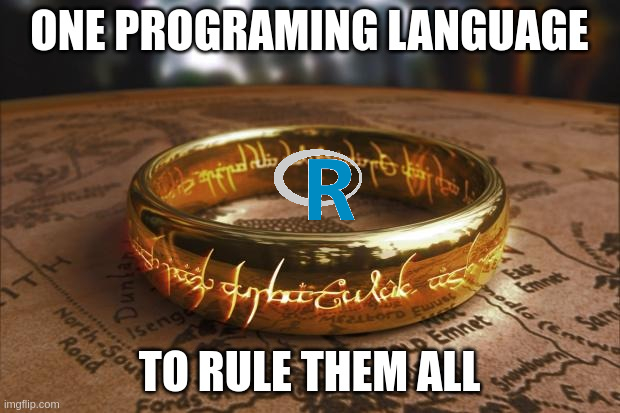

### Let's create a vector with names:
randomNames <- c("Randall", "Pablo", "Emma")
print(randomNames) #You don't need to type print. This is for teaching purposes. [1] "Randall" "Pablo" "Emma" RDepartment of Psychology and Child Development
R is a programming language mostly used in statistics. It was created by statisticians.
R was inspired by the statistical language S developed by At&T. S stands for “statistics” and it was written based on C language. After S was sold to a small company, S-plus was created with a graphical interface.
R was considered a “statistics” language, but nowadays it can perform more tasks. We will see examples where you can create a website, create a dashboard, create a teaching notebook, and presentation slides!
R also provides multiple options to create graphics and plots. The options are infinite when you use a programming language.
R?R?R?R is free and open-source software. R is available as Free Software under the terms of the Free Software Foundation’s GNU General Public License.R skills are needed.More info
See datacamp.com opinion.
R works?R is an interpreted language, that means you don’t need to compile the code. You will need to use a command-line interpreter.
It is an object-oriented programming language. It represents the information using virtual objects.
R has several built-in functions but they are not enough to answer all the possible research questions a researcher will have.
R users support their data analysis using packages that other members of the community developed.
These packages are actually software and they can be installed very easily in R. You don’t have to program anything, there are 19 985 packages as today. But of course, you might need to program some routines if your problem is very specific.
The packages are all located in a large repository call Comprehensive R Archive Network (CRAN)
RR have properties and names, similar to real objects:
R. I’ll explain a little bit of each one.It is the most basic object, it is the bones of R.
In human language, they look like lists of elements. But, when mixed different type of data (letters mixed with numbers) things get messy:
### Let's create a vector with names:
randomNames <- c("Randall", "Pablo", "Emma")
print(randomNames) #You don't need to type print. This is for teaching purposes. [1] "Randall" "Pablo" "Emma" Let’s see what happen’s when I mix numbers and letters:
[1] "one" "1" "2" "two" "3" "three"R coerces everything to be a string or character vector.
[] as an index indicatorData frame is the most useful type of object when you conduct data analysis.
A data frame is several lists combined together, and it looks pretty much like a matrix or a spreadsheet:
mpg cyl disp hp drat wt qsec vs am gear carb
Mazda RX4 21.0 6 160.0 110 3.90 2.620 16.46 0 1 4 4
Mazda RX4 Wag 21.0 6 160.0 110 3.90 2.875 17.02 0 1 4 4
Datsun 710 22.8 4 108.0 93 3.85 2.320 18.61 1 1 4 1
Hornet 4 Drive 21.4 6 258.0 110 3.08 3.215 19.44 1 0 3 1
Hornet Sportabout 18.7 8 360.0 175 3.15 3.440 17.02 0 0 3 2
Valiant 18.1 6 225.0 105 2.76 3.460 20.22 1 0 3 1
Duster 360 14.3 8 360.0 245 3.21 3.570 15.84 0 0 3 4
Merc 240D 24.4 4 146.7 62 3.69 3.190 20.00 1 0 4 2
Merc 230 22.8 4 140.8 95 3.92 3.150 22.90 1 0 4 2
Merc 280 19.2 6 167.6 123 3.92 3.440 18.30 1 0 4 4
Merc 280C 17.8 6 167.6 123 3.92 3.440 18.90 1 0 4 4
Merc 450SE 16.4 8 275.8 180 3.07 4.070 17.40 0 0 3 3
Merc 450SL 17.3 8 275.8 180 3.07 3.730 17.60 0 0 3 3
Merc 450SLC 15.2 8 275.8 180 3.07 3.780 18.00 0 0 3 3
Cadillac Fleetwood 10.4 8 472.0 205 2.93 5.250 17.98 0 0 3 4
Lincoln Continental 10.4 8 460.0 215 3.00 5.424 17.82 0 0 3 4
Chrysler Imperial 14.7 8 440.0 230 3.23 5.345 17.42 0 0 3 4
Fiat 128 32.4 4 78.7 66 4.08 2.200 19.47 1 1 4 1
Honda Civic 30.4 4 75.7 52 4.93 1.615 18.52 1 1 4 2
Toyota Corolla 33.9 4 71.1 65 4.22 1.835 19.90 1 1 4 1
Toyota Corona 21.5 4 120.1 97 3.70 2.465 20.01 1 0 3 1
Dodge Challenger 15.5 8 318.0 150 2.76 3.520 16.87 0 0 3 2
AMC Javelin 15.2 8 304.0 150 3.15 3.435 17.30 0 0 3 2
Camaro Z28 13.3 8 350.0 245 3.73 3.840 15.41 0 0 3 4
Pontiac Firebird 19.2 8 400.0 175 3.08 3.845 17.05 0 0 3 2
Fiat X1-9 27.3 4 79.0 66 4.08 1.935 18.90 1 1 4 1
Porsche 914-2 26.0 4 120.3 91 4.43 2.140 16.70 0 1 5 2
Lotus Europa 30.4 4 95.1 113 3.77 1.513 16.90 1 1 5 2
Ford Pantera L 15.8 8 351.0 264 4.22 3.170 14.50 0 1 5 4
Ferrari Dino 19.7 6 145.0 175 3.62 2.770 15.50 0 1 5 6
Maserati Bora 15.0 8 301.0 335 3.54 3.570 14.60 0 1 5 8
Volvo 142E 21.4 4 121.0 109 4.11 2.780 18.60 1 1 4 2Let’s beautify the data frame output:
R. You can combine different types of objects in a single list:### Let's create different types of objects
### Data frame
data_1 <- data.frame(v1= rnorm(8),
v2 = rnorm(8),
v3 = rnorm(8))
### Vector
moreNames <- c("Bob", "Paris", "Ana")
### Numeric vector
numericVector <- c(1,3,78,90)
### We can group all these objects in a list
listOfObjects <- list(data_1,
moreNames,
numericVector)
print(listOfObjects)[[1]]
v1 v2 v3
1 1.8902223 0.27470521 -0.09773574
2 -0.1646468 -1.33127203 0.73335452
3 -0.2726281 1.41410826 0.07736676
4 0.4064117 0.64348853 0.33315138
5 0.8207293 0.81350766 0.50652629
6 -0.2590162 -0.08945012 0.59977365
7 -1.0536551 -0.34730255 0.08671224
8 0.2535251 -1.31268018 -0.86488363
[[2]]
[1] "Bob" "Paris" "Ana"
[[3]]
[1] 1 3 78 90If you need to access one object in the list you may use its location plus [[]]:
I don’t use arrays in my code, but they are common in in R and other languages.
An arrays is a multidimensional object, you can have multiple “slices” of information in on single object.
It is similar to a multi-layer object.
A function is a data object that requires input information, in return; it will give an output.
I have already used several functions (e.g. data.frame(), rnorm()).
Functions will always follow the following structure:
estimateAge <- function(myBirthday) {
### Function to check if year is a
### leap year.
leapyear <- function(year) {
return(((year %% 4 == 0) & (year %% 100 != 0)) | (year %% 400 == 0))
}
### Information necessary to compute age
myBirthday2 <- as.Date(myBirthday)
today <- Sys.Date()
year <- as.numeric(format(myBirthday2, "%Y"))
leapCheck <- leapyear(year)
if (leapCheck == TRUE) {
## leap year
age <- difftime(today,
myBirthday2 ,
units = "days") / (365 + 1)
} else {
## No leap year
age <- difftime(today,
myBirthday2,
units = "days") / 365
}
message("Your age is"," ", age)
}estimateAge() requires only one argument myBirthday, that argument is passed to the computation inside the function to estimate the age.lubridate.R code and run it in our websitesR### The rule is to write the packages required by your code at the beginning
## Packages loaded or called
library(jpeg) ## reads pictures into R
library(patchwork) ## more tools to add features in a plot
library(ggplot2) ## creates plots
library(palmerpenguins) ## This package has the penguin data
picture <- "penguins.jpg"
img <- readJPEG(picture, native = TRUE)
### Plotting the data using ggplot2
ggplot(penguins, aes(x = flipper_length_mm,
y= body_mass_g,
color = species)) +
geom_point() +
geom_smooth(se = FALSE, method = "lm" ) +
theme_classic() +
xlab("Flipper Length in milimeters")+
ylab("Body Mass in grams")+
inset_element(p = img,
left = 0.05,
bottom = 0.65,
right = 0.5,
top = 0.95)
